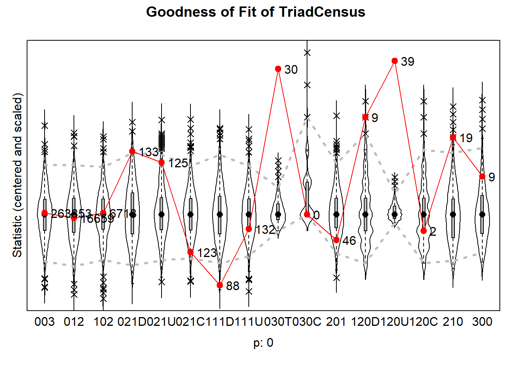
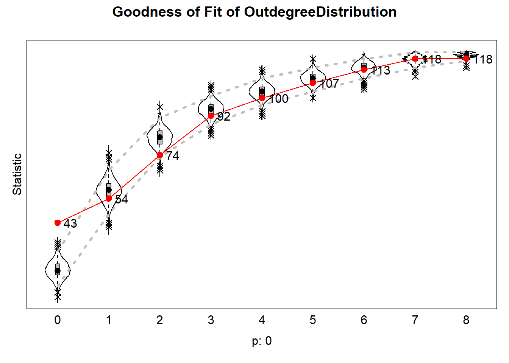
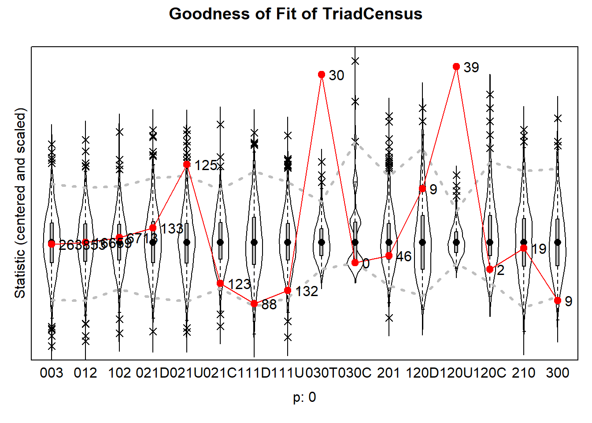
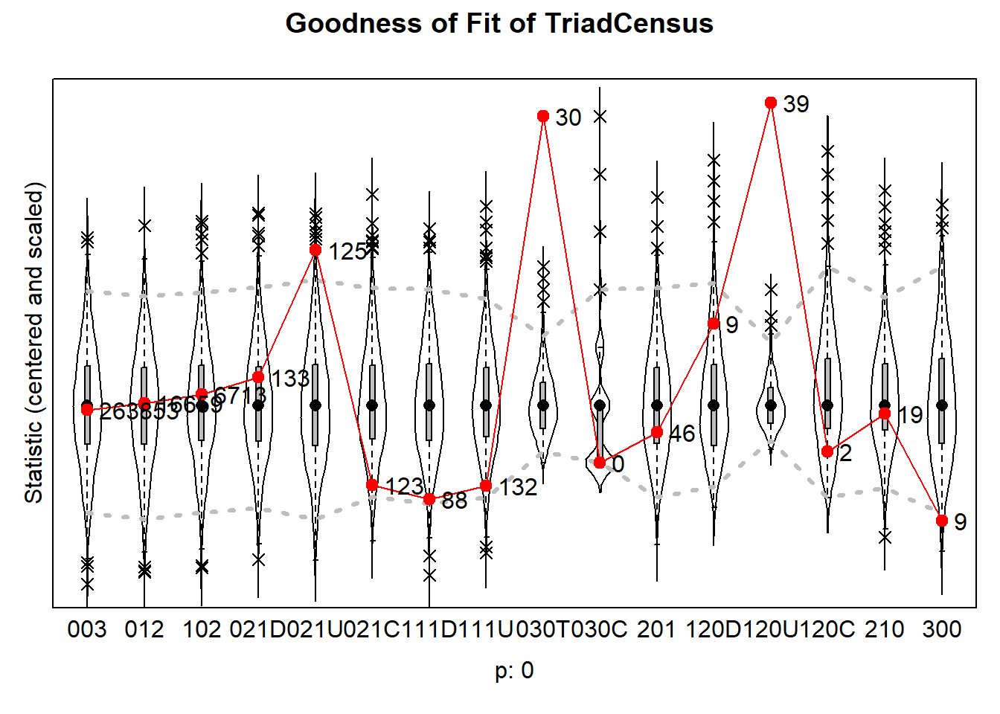

Exploratory Results
by: Nina Sneijers
1 Exploratory Results
1.1 Model 0: Simple Model
The null model converges at 0.13, which is acceptable. The outcomes of the simple model show things we have already learned from the descriptive results and the network graph, namely that there is a significant chance that one does not observe a tie compared to the chance that one observes a tie (b = -2.67, SE = 0.53, p > .01).
The rate for the behavioural is significant, meaning that… Change in social satisfaction is not significant on a linear level (b = 0.17, SE = 0.14, p = 0.22), but it is significant on a quadratic level (b = -0.34, SE = 0.15, p = 0.02) and going into a negative direction, which indicates that …
However, these statistics do not tell me a lot yet, as I have not added it any additional statistics. Because of that, the Goodness-Of-Fit models for this model will indicate that the models do not fit well. Therefore, I will not plot them yet.
Table 1: Results of Model 0
pander::pander(results_m0)| effect | b | se | t |
|---|---|---|---|
| basic rate parameter netMLC | 6.878 | 0.5339 | 12.88 |
| outdegree (density) | -2.666 | 0.07295 | -36.55 |
| reciprocity | 2.096 | 0.1472 | 14.24 |
| rate behMLC period 1 | 1.793 | 0.3801 | 4.718 |
| behMLC linear shape | 0.1742 | 0.1423 | 1.224 |
| behMLC quadratic shape | -0.3374 | 0.1457 | -2.316 |
| p |
|---|
| 0.00000000000000000000000000000000000005645 |
| 1.864e-292 |
| 0.0000000000000000000000000000000000000000000005535 |
| 0.000002385 |
| 0.2208 |
| 0.02055 |
1.2 Model 1: Homogeneity in Reciprocated Ties
The first model is used to look at whether reciprocated ties are more likely to occur among students whose parents have the same educational level.
results_m1## effect b se t
## 1 basic rate parameter netMLC 9.85916781 1.04172890 9.4642356
## 2 outdegree (density) -1.82003155 0.21274326 -8.5550608
## 3 reciprocity 1.92393090 0.25542769 7.5321940
## 4 transitive triplets 0.28592387 0.04879150 5.8601168
## 5 indegree - popularity -0.02869935 0.02803032 -1.0238679
## 6 outdegree - activity -0.05107881 0.02010255 -2.5409123
## 7 out-isolate 3.37483748 0.50037134 6.7446658
## 8 parent_edu_ccv alter 0.20594110 0.17124496 1.2026112
## 9 parent_edu_ccv ego -0.16840384 0.13212130 -1.2746153
## 10 same parent_edu_ccv -0.02069589 0.14729929 -0.1405023
## 11 same parent_edu_ccv x reciprocity -0.37206767 0.34473062 -1.0792998
## 12 rate behMLC period 1 1.78347689 0.33180386 5.3750939
## 13 behMLC linear shape 0.18031843 0.14160592 1.2733820
## 14 behMLC quadratic shape -0.33775252 0.14941227 -2.2605408
## p
## 1 0.000000000000000000002957159
## 2 0.000000000000000011780661474
## 3 0.000000000000049894758824058
## 4 0.000000004625417776830106967
## 5 0.305897650264439935341442833
## 6 0.011056365385816934246432375
## 7 0.000000000015337963955565049
## 8 0.229126825555282076507523925
## 9 0.202445430667734238561195070
## 10 0.888263113401613346731267029
## 11 0.280454124001160043366809305
## 12 0.000000076542801194620714170
## 13 0.202882514480690695490849862
## 14 0.023787706462121575856638600Table 2: Results of Model 1
pander::pander(results_m1)| effect | b | se | t |
|---|---|---|---|
| basic rate parameter netMLC | 9.859 | 1.042 | 9.464 |
| outdegree (density) | -1.82 | 0.2127 | -8.555 |
| reciprocity | 1.924 | 0.2554 | 7.532 |
| transitive triplets | 0.2859 | 0.04879 | 5.86 |
| indegree - popularity | -0.0287 | 0.02803 | -1.024 |
| outdegree - activity | -0.05108 | 0.0201 | -2.541 |
| out-isolate | 3.375 | 0.5004 | 6.745 |
| parent_edu_ccv alter | 0.2059 | 0.1712 | 1.203 |
| parent_edu_ccv ego | -0.1684 | 0.1321 | -1.275 |
| same parent_edu_ccv | -0.0207 | 0.1473 | -0.1405 |
| same parent_edu_ccv x reciprocity | -0.3721 | 0.3447 | -1.079 |
| rate behMLC period 1 | 1.783 | 0.3318 | 5.375 |
| behMLC linear shape | 0.1803 | 0.1416 | 1.273 |
| behMLC quadratic shape | -0.3378 | 0.1494 | -2.261 |
| p |
|---|
| 0.000000000000000000002957 |
| 0.00000000000000001178 |
| 0.00000000000004989 |
| 0.000000004625 |
| 0.3059 |
| 0.01106 |
| 0.00000000001534 |
| 0.2291 |
| 0.2024 |
| 0.8883 |
| 0.2805 |
| 0.00000007654 |
| 0.2029 |
| 0.02379 |
Figure 2
1.2.1 Goodness Of Fit for Model 1
1.2.1.1 Indegree distribution
plot(gofi1)
1.2.1.2 Outdegree distribution
plot(gofo1)
1.2.1.3 TriadCensus
plot(gof1tc, center = T, scale = T)
2 RCode
The coding process… and some thoughts
2.1 Preparation
#dependent variable
netMLC <- sienaDependent(array(data = c(wave1, wave2), dim = c(dim(wave1), 2)))
#behavioural variable
behy <- df2 %>%
dplyr::select("socsatw1n", "socsatw2n") %>%
as.matrix()
behMLC <- sienaDependent(behy, type = c("behavior"))
#independent variables
parent_edu_ccv <- coCovar(as.numeric(df2$parentshighf))
gender_ccv <- coCovar(as.numeric(df2$genderf))
ethnicity_ccv <- coCovar(as.numeric(df2$ethnicityf))
#data
mydata <- sienaDataCreate(netMLC, behMLC, parent_edu_ccv, gender_ccv, ethnicity_ccv)
#effects structure
myeff <- getEffects(mydata)
#?
myAlgorithm <- (sienaAlgorithmCreate(projname = "results"))## If you use this algorithm object, siena07 will create/use an output file results.txt .2.2 Model 0: Simple Model
simple_model <- siena07(myAlgorithm, data = mydata, effects = myeff, thetaBound = 10000, returnDeps = T)2.3 Model 1: Homogeneity in reciprocated ties
myeff <- includeEffects(myeff, egoX, altX, sameX, sameXRecip, interaction1 = "parent_edu_ccv") ## effectNumber effectName shortName include fix test
## 1 265 parent_edu_ccv alter altX TRUE FALSE FALSE
## 2 280 parent_edu_ccv ego egoX TRUE FALSE FALSE
## 3 336 same parent_edu_ccv sameX TRUE FALSE FALSE
## 4 342 same parent_edu_ccv x reciprocity sameXRecip TRUE FALSE FALSE
## initialValue parm
## 1 0 0
## 2 0 0
## 3 0 0
## 4 0 0model1.1 <- siena07(myAlgorithm, data = mydata, effects = myeff, thetaBound = 10000, returnDeps = T)
model1.1## Estimates, standard errors and convergence t-ratios
##
## Estimate Standard Convergence
## Error t-ratio
## Network Dynamics
## 1. rate basic rate parameter netMLC 6.8318 ( 0.5016 ) -0.0636
## 2. eval outdegree (density) -2.7266 ( 0.1172 ) -0.0200
## 3. eval reciprocity 2.1954 ( 0.2248 ) -0.0173
## 4. eval parent_edu_ccv alter 0.1962 ( 0.1500 ) -0.0277
## 5. eval parent_edu_ccv ego -0.2903 ( 0.1543 ) -0.0232
## 6. eval same parent_edu_ccv 0.0619 ( 0.1477 ) -0.0337
## 7. eval same parent_edu_ccv x reciprocity -0.0995 ( 0.2930 ) -0.0031
##
## Behavior Dynamics
## 8. rate rate behMLC period 1 1.7844 ( 0.3756 ) 0.0479
## 9. eval behMLC linear shape 0.1734 ( 0.1375 ) -0.0040
## 10. eval behMLC quadratic shape -0.3425 ( 0.1373 ) -0.0654
##
## Overall maximum convergence ratio: 0.1206
##
##
## Total of 2926 iteration steps.gofi1.1 <- sienaGOF(model1.1, IndegreeDistribution, verbose = FALSE, join = TRUE, varName = "netMLC")
gofo1.1 <- sienaGOF(model1.1, OutdegreeDistribution, verbose = FALSE, join = TRUE, varName = "netMLC")
#gof0.gd <- sienaGOF(model1.1, GeodesicDistribution, cumulative = FALSE, verbose = FALSE, join = TRUE, varName = "netMLC")
# Q: wat moet er een matrix zijn dan? Hij runt niet
gof1.1.tc <- sienaGOF(model1.1, TriadCensus, verbose = FALSE, join = TRUE, varName = "netMLC")plot(gofi1.1)
plot(gofo1.1)plot(gof1.1.tc, center = T, scale = T)
WELL, that does not very good. But that’s not weird, because I have not added any additional effects. Let’s add a triad effect :)
myeff <- includeEffects(myeff, transTrip) ## effectNumber effectName shortName include fix test initialValue
## 1 24 transitive triplets transTrip TRUE FALSE FALSE 0
## parm
## 1 0model1.2 <- siena07(myAlgorithm, data = mydata, effects = myeff, thetaBound = 10000, returnDeps = T)
model1.2## Estimates, standard errors and convergence t-ratios
##
## Estimate Standard Convergence
## Error t-ratio
## Network Dynamics
## 1. rate basic rate parameter netMLC 8.1442 ( 0.6749 ) 0.0703
## 2. eval outdegree (density) -2.7852 ( 0.1071 ) 0.0114
## 3. eval reciprocity 1.9417 ( 0.2504 ) 0.0104
## 4. eval transitive triplets 0.2943 ( 0.0405 ) -0.0434
## 5. eval parent_edu_ccv alter 0.1573 ( 0.1460 ) -0.0586
## 6. eval parent_edu_ccv ego -0.2829 ( 0.1454 ) -0.0269
## 7. eval same parent_edu_ccv 0.0274 ( 0.1404 ) 0.0038
## 8. eval same parent_edu_ccv x reciprocity -0.3086 ( 0.3075 ) 0.0143
##
## Behavior Dynamics
## 9. rate rate behMLC period 1 1.7658 ( 0.4231 ) -0.0120
## 10. eval behMLC linear shape 0.1794 ( 0.1432 ) 0.0253
## 11. eval behMLC quadratic shape -0.3474 ( 0.1626 ) 0.0085
##
## Overall maximum convergence ratio: 0.1299
##
##
## Total of 2968 iteration steps.gofi1.2 <- sienaGOF(model1.2, IndegreeDistribution, verbose = FALSE, join = TRUE, varName = "netMLC")
gofo1.2 <- sienaGOF(model1.2, OutdegreeDistribution, verbose = FALSE, join = TRUE, varName = "netMLC")
gof1.2.tc <- sienaGOF(model1.1, TriadCensus, verbose = FALSE, join = TRUE, varName = "netMLC")plot(gofi1.2)
plot(gofo1.2)
plot(gof1.2.tc, center = T, scale = T)
Another one…
myeff1.3 <- includeEffects(myeff, inPop, outAct, outIso) ## effectNumber effectName shortName include fix test initialValue
## 1 81 indegree - popularity inPop TRUE FALSE FALSE 0
## 2 118 outdegree - activity outAct TRUE FALSE FALSE 0
## 3 149 out-isolate outIso TRUE FALSE FALSE 0
## parm
## 1 0
## 2 0
## 3 1model1.3 <- siena07(myAlgorithm, data = mydata, effects = myeff1.3, thetaBound = 10000, returnDeps = T)
model1.3## Estimates, standard errors and convergence t-ratios
##
## Estimate Standard Convergence
## Error t-ratio
## Network Dynamics
## 1. rate basic rate parameter netMLC 9.9811 ( 1.1683 ) 0.0117
## 2. eval outdegree (density) -1.7940 ( 0.2315 ) -0.0325
## 3. eval reciprocity 1.9260 ( 0.2551 ) 0.0065
## 4. eval transitive triplets 0.2920 ( 0.0472 ) -0.0310
## 5. eval indegree - popularity -0.0318 ( 0.0319 ) -0.0518
## 6. eval outdegree - activity -0.0531 ( 0.0204 ) -0.0460
## 7. eval out-isolate 3.4053 ( 0.4399 ) 0.0114
## 8. eval parent_edu_ccv alter 0.1982 ( 0.1400 ) -0.0198
## 9. eval parent_edu_ccv ego -0.1711 ( 0.1379 ) -0.0052
## 10. eval same parent_edu_ccv -0.0225 ( 0.1481 ) -0.0131
## 11. eval same parent_edu_ccv x reciprocity -0.3697 ( 0.3299 ) 0.0155
##
## Behavior Dynamics
## 12. rate rate behMLC period 1 1.7861 ( 0.3161 ) -0.0357
## 13. eval behMLC linear shape 0.1771 ( 0.1384 ) -0.0384
## 14. eval behMLC quadratic shape -0.3382 ( 0.1393 ) 0.0587
##
## Overall maximum convergence ratio: 0.1312
##
##
## Total of 3194 iteration steps.gofi1.3 <- sienaGOF(model1.3, IndegreeDistribution, verbose = FALSE, join = TRUE, varName = "netMLC")
gofo1.3 <- sienaGOF(model1.3, OutdegreeDistribution, verbose = FALSE, join = TRUE, varName = "netMLC")
gof1.3.tc <- sienaGOF(model1.3, TriadCensus, verbose = FALSE, join = TRUE, varName = "netMLC")plot(gofi1.3)
plot(gofo1.3)plot(gof1.3.tc, center = T, scale = T)
Another one?
myeff1.5 <- includeEffects(myeff1.3, between) ## effectNumber effectName shortName include fix test initialValue parm
## 1 50 betweenness between TRUE FALSE FALSE 0 0model1.5 <- siena07(myAlgorithm, data = mydata, effects = myeff1.3, thetaBound = 10000, returnDeps = T)
model1.5## Estimates, standard errors and convergence t-ratios
##
## Estimate Standard Convergence
## Error t-ratio
## Network Dynamics
## 1. rate basic rate parameter netMLC 9.9491 ( 0.8382 ) -0.0512
## 2. eval outdegree (density) -1.7969 ( 0.2176 ) -0.0548
## 3. eval reciprocity 1.9202 ( 0.2470 ) -0.0032
## 4. eval transitive triplets 0.2909 ( 0.0495 ) 0.0362
## 5. eval indegree - popularity -0.0295 ( 0.0291 ) -0.0308
## 6. eval outdegree - activity -0.0531 ( 0.0199 ) -0.0391
## 7. eval out-isolate 3.3942 ( 0.4965 ) 0.0272
## 8. eval parent_edu_ccv alter 0.1956 ( 0.1563 ) -0.0136
## 9. eval parent_edu_ccv ego -0.1602 ( 0.1379 ) 0.0439
## 10. eval same parent_edu_ccv -0.0352 ( 0.1421 ) -0.0436
## 11. eval same parent_edu_ccv x reciprocity -0.3609 ( 0.3107 ) 0.0292
##
## Behavior Dynamics
## 12. rate rate behMLC period 1 1.8022 ( 0.3465 ) 0.0228
## 13. eval behMLC linear shape 0.1801 ( 0.1453 ) 0.0052
## 14. eval behMLC quadratic shape -0.3344 ( 0.1584 ) 0.0220
##
## Overall maximum convergence ratio: 0.1353
##
##
## Total of 3194 iteration steps.#saveRDS(model1.5, "model1.rds")gofi1.5 <- sienaGOF(model1.5, IndegreeDistribution, verbose = FALSE, join = TRUE, varName = "netMLC")
gofo1.5 <- sienaGOF(model1.5, OutdegreeDistribution, verbose = FALSE, join = TRUE, varName = "netMLC")
gof1.5.tc <- sienaGOF(model1.5, TriadCensus, verbose = FALSE, join = TRUE, varName = "netMLC")plot(gofi1.5)plot(gofo1.5)plot(gof1.5.tc, center = T, scale = T)
I do not want to over control, so even though my Goodness-of-Fit is still not significant I think I will go with this model.